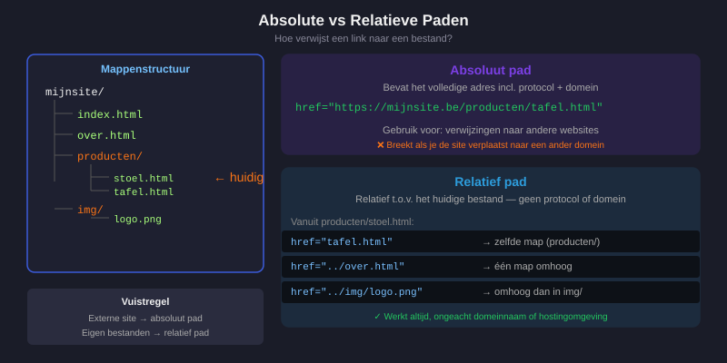
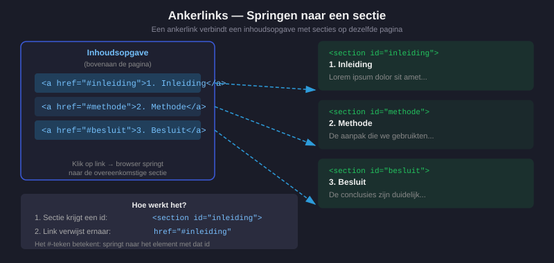
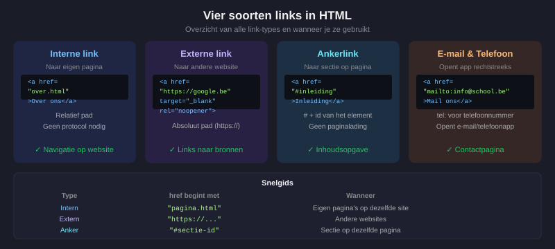
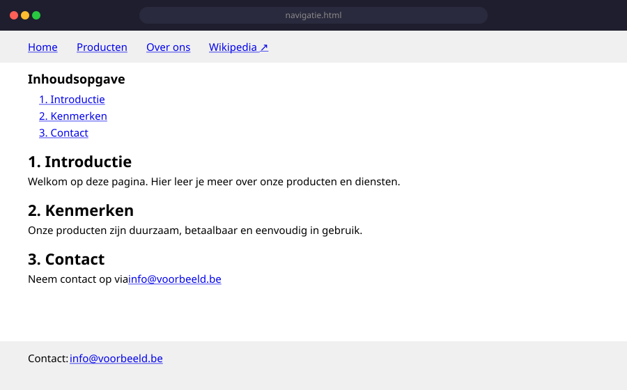

Links: Navigeren op het Web
- Een hyperlink maken met het
<a>-element - Het verschil uitleggen tussen een absoluut en een relatief pad
- Interne links (ankerlinks) maken naar een sectie op dezelfde pagina
- Een link openen in een nieuw tabblad
- Een klikbare e-maillink aanmaken
4.1 Het <a>-element
Het <a>-element (anchor = anker) maakt van tekst of een afbeelding een klikbare link.
<a href="https://www.google.com">Ga naar Google</a>Het href-attribuut (Hypertext REFerence) bepaalt waarnaar de link verwijst. Zonder href is het geen link.
Structuur
<a href="doel">zichtbare tekst of afbeelding</a>
↑ ↑
element inhoud die klikbaar wordtVoorbeelden
<!-- Tekstlink naar een externe website -->
<a href="https://developer.mozilla.org">MDN Web Docs</a>
<!-- Link naar een eigen pagina -->
<a href="contact.html">Contacteer ons</a>
<!-- Link die een afbeelding klikbaar maakt -->
<a href="producten.html">
<img src="img/logo.svg" alt="Naar de productenpagina">
</a>4.2 Absolute vs. relatieve paden
Dit is het meest verwarrende concept voor beginners. Begrijp je dit goed, dan heb je veel minder problemen met gebroken links.
Absoluut pad
Een absoluut pad bevat het volledige adres — inclusief protocol (https://), domeinnaam en mapstructuur.
<a href="https://www.voorbeeld.be/producten/stoel.html">Onze stoel</a>Gebruik een absoluut pad wanneer je verwijst naar een andere website.
Relatief pad
Een relatief pad beschrijft de locatie vanuit het huidige bestand. Je laat het protocol en de domeinnaam weg.
<!-- Bestand in dezelfde map -->
<a href="contact.html">Contact</a>
<!-- Bestand in een submap -->
<a href="producten/stoel.html">Onze stoel</a>
<!-- Eén map omhoog, dan in een andere map -->
<a href="../afbeeldingen/logo.png">Logo</a>Gebruik een relatief pad wanneer je verwijst naar een eigen pagina op dezelfde website.

Waarom relatieve paden beter zijn voor eigen bestanden
Stel je hebt een website op https://mijnsite.be. Als je overal https://mijnsite.be/contact.html gebruikt en je verplaatst de site naar een andere domeinnaam, zijn alle links gebroken. Met relatieve paden werkt alles altijd, ongeacht waar de site gehost wordt.
Externe sites = absoluut pad. Eigen pagina's = relatief pad.
4.3 Link openen in nieuw tabblad
Standaard opent een link in hetzelfde tabblad. Met het attribuut target="_blank" open je de link in een nieuw tabblad:
<a href="https://www.wikipedia.org" target="_blank">Wikipedia</a>Gebruik target="_blank" enkel voor externe websites. Als je een bezoeker naar een andere site stuurt, is het beleefd om je eigen pagina open te laten. Voor eigen pagina's is target="_blank" zelden nodig.
4.4 Ankerlinks — navigeren binnen dezelfde pagina
Op een lange pagina wil je soms direct naar een bepaalde sectie springen zonder te scrollen. Dat doe je met een ankerlink.
Stap 1 — Geef de sectie een id
<section id="contact">
<h2>Contactformulier</h2>
...
</section>Stap 2 — Maak een link naar dat id
<a href="#contact">Ga naar het contactformulier</a>Het #-teken gevolgd door het id vertelt de browser: scroll naar dit element op dezelfde pagina.
Voorbeeld: inhoudsopgave
<!-- Inhoudsopgave bovenaan de pagina -->
<nav>
<ul>
<li><a href="#inleiding">1. Inleiding</a></li>
<li><a href="#methode">2. Methode</a></li>
<li><a href="#resultaten">3. Resultaten</a></li>
<li><a href="#conclusie">4. Conclusie</a></li>
</ul>
</nav>
<section id="inleiding">
<h2>1. Inleiding</h2>
<p>...</p>
</section>
<section id="methode">
<h2>2. Methode</h2>
<p>...</p>
</section>
4.5 E-maillinks en andere speciale links
E-maillink
<a href="mailto:info@school.be">Stuur ons een e-mail</a>Bij klikken opent het standaard e-mailprogramma van de gebruiker met het e-mailadres al ingevuld.
Telefoonnummerlink (handig op mobiel)
<a href="tel:+3212345678">Bel ons: 012 34 56 78</a>Op smartphones opent dit direct de telefoonapp.
4.6 Overzicht: soorten links

| Type | href | Wanneer gebruiken |
|---|---|---|
| Interne link | "pagina.html" (relatief) | Naar eigen pagina |
| Externe link | "https://..." (absoluut) | Naar andere website |
| Ankerlink | "#sectie-id" | Naar sectie op dezelfde pagina |
| E-maillink | "mailto:..." | E-mailadres openen |
| Telefoonlink | "tel:..." | Telefoonnummer op mobiel |
Oefeningen
Bekijk de onderstaande links. Schrijf voor elke link op: (a) welk type het is en (b) of de href-waarde correct is.
<a href="index.html">Home</a>
<a href="https://www.google.com">Zoeken</a>
<a href="#footer">Ga naar footer</a>
<a href="mailto:jan@voorbeeld.be">E-mail Jan</a>
<a href="https://mijnsite.be/contact.html">Contact</a>Maak een bestand navigatie.html. De pagina bevat:
- Een
<header>met een<nav>met vier linkjes:- "Home" →
index.html - "Producten" →
producten.html - "Over ons" →
over.html - "Wikipedia" →
https://www.wikipedia.org(opent in nieuw tabblad)
- "Home" →
- Een
<main>met drie secties (id:intro,kenmerken,contact) en een inhoudsopgave bovenaan die via ankerlinks naar elke sectie springt. - Een
<footer>met een klikbaar e-mailadres.
Zo ziet het resultaat eruit in de browser:

Zoek en verbeter de fouten in onderstaande code:
<nav>
<ul>
<li><a>Home</a></li>
<li><a href="https://contact.html">Contact</a></li>
<li><a href="wikipedia.org">Wikipedia</a></li>
<li><a href="mailto:info@school">E-mail</a></li>
</ul>
</nav>Er zijn 4 fouten in deze code. Zoek ze allemaal en schrijf voor elke fout op: wat er fout is en hoe je het verbetert.
Huistaak
Opdracht: Een linkenpagina voor jouw favoriete websites
Je maakt een HTML-pagina met een overzicht van jouw favoriete websites, verdeeld in categorieën. De pagina oefent alle soorten links die je in H04 geleerd hebt.
Maak een nieuw bestand: links.html
Deel 1 — Externe links (3 punten)
- Maak een
<section>aan met de titel<h2>Mijn favoriete websites</h2>. - Voeg een ongeordende lijst toe met minstens 4 externe links naar echte websites (bv. YouTube, Wikipedia, een nieuwssite, een gamesite, …).
- Elke link moet:
- Een
href-attribuut hebben met de volledige URL (inclusiefhttps://) - Een duidelijke linktekst hebben (niet "klik hier")
- Openen in een nieuw tabblad (
target="_blank") - Het
rel="noopener noreferrer"-attribuut bevatten (veiligheid!)
- Een
Deel 2 — Interne links en ankers (4 punten)
Voeg bovenaan de pagina een inhoudsopgave toe:
- Maak een
<nav>-element met de titel<h2>Inhoudsopgave</h2>. - Maak een lijst met 3 interne links die verwijzen naar secties lager op de pagina:
#favorieten→ springt naar de sectie "Mijn favoriete websites"#nieuws→ springt naar een nieuwe sectie "Nieuws"#contact→ springt naar een nieuwe sectie "Contact"
- Voeg de drie secties toe met de correcte
id-attributen en wat inhoud.
Deel 3 — E-maillink en relatieve link (3 punten)
- Voeg in de sectie "Contact" een e-maillink toe:
<a href="mailto:jouwnaam@leerling.school.be">Stuur mij een e-mail</a> - Maak een tweede HTML-bestand:
over-mij.html(mag leeg zijn, enkel de basisstructuur). - Voeg in
links.htmleen relatieve link toe naarover-mij.htmlmet de tekst "Over mij".
Vragenlijst
Controleer of je de leerstof van dit hoofdstuk begrijpt.
Welk attribuut bepaalt waarnaar een <a>-link verwijst?
Welk type pad gebruik je voor links naar andere websites?
Welk attribuut gebruik je om een link in een nieuw tabblad te openen?
Hoe maak je een ankerlink naar een sectie met id="contact"?
Welke href-waarde gebruik je voor een link die het e-mailprogramma opent?
Welk type pad gebruik je voor links naar eigen pagina's op dezelfde website?